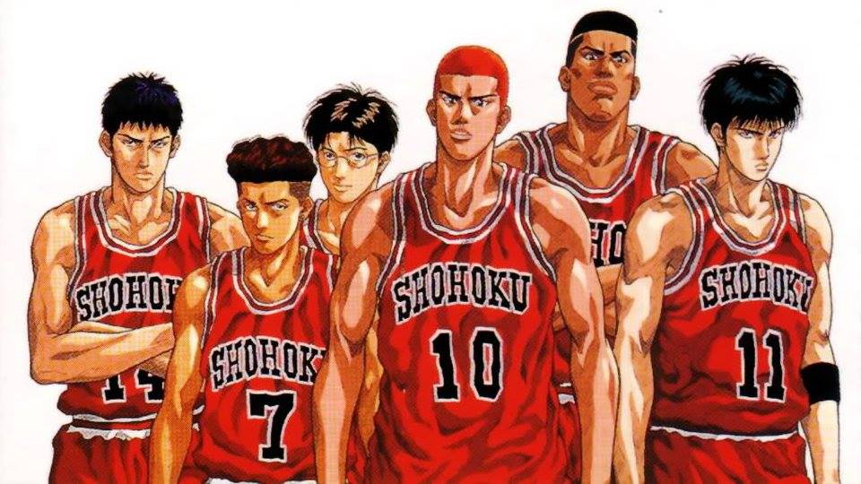
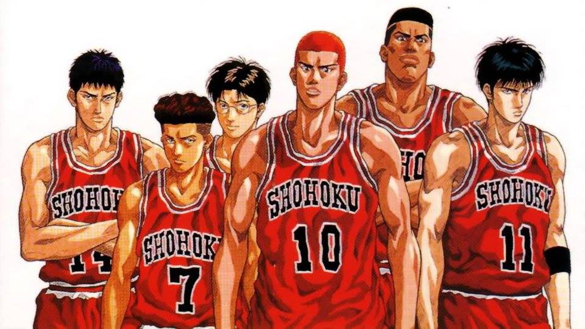

身高202cm，神奈川第一長人，陵南隊長。
曾被視為除了身高一無是處的庸才，但在咬牙苦撐下，成長為陵南隊中流砥柱。
陵南最好的防守隊員，冷靜而有毅力， 能很好地完成任務直到比賽結束。
他擁有卓越的防守能力，陵南高中對海南大附屬高中的比賽中，最後一刻就是靠他盜走了牧紳一的控球，
讓仙道彰獲得快攻機會把比分追平。對戰湘北下半場成功釘死了三井壽。

進攻及防守的實力都相當平均,沒有突出的技能,但是其實而不華的技術和高揚的士氣使他成為陵南隊不可或缺的一員，
他最不能忍受的是櫻木花道（還有有時候過於吵鬧的相田彥一）。
人稱天才仙道，是神奈川縣公認的高中聯賽最優秀球員之一，
攻守與組織傳導能力都屬頂尖，是整部作品中唯一無死角的全能人物。
福田在一年級加入陵南高中籃球部時，是一個初學者。曾經不自量力地挑戰隊中的中鋒魚住純。
可是，田岡教練卻看出福田是可造之材，因此對他的訓練特別嚴苛，而且經常把他罵得狗血淋頭。

 
